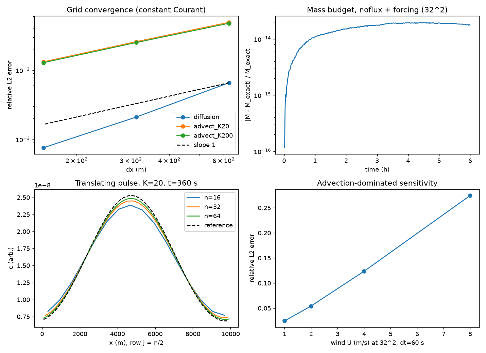

4 E01 Forward-solver verification (local 16²/32²/64²)
Question. Does the FiPy solver solve the declared PDE accurately, conserve mass, and stay positive? Evidence label: verified (conditionally cleared by gate-01) for the closed-box/periodic oracles; superseded for 64² production runs by amendment A2 (section at the end).
Simulated passive tracer only; nothing here is evidence about ambient PM2.5. All numbers below are read from tables/e01-verification.csv, written by scripts/e01_verification.py (one registered run) and rendered to markdown by tables/make_e01_md.py. References are the closed-form oracles of tests/test_forward_oracles.py; tolerances come from docs/research/pde-and-discretization.md §5 (order p = 1, margin 0.2, discrete-exact 1e-8), not from solver output.
4.1 Grid convergence at constant Courant number
| case | n | dt | rel_l2 | peak_ratio | min_over_max | mass_rel_err |
|---|---|---|---|---|---|---|
| diffusion_n16 | 16 | 120 | 0.00659 | 1.01 | 0.223 | 1.65e-15 |
| diffusion_n32 | 32 | 60 | 0.0021 | 1 | 0.223 | 6.58e-14 |
| diffusion_n64 | 64 | 30 | 0.000758 | 1 | 0.224 | 1.84e-13 |
| advect_K20_n16 | 16 | 120 | 0.0493 | 0.939 | 0.0953 | 1.65e-16 |
| advect_K20_n32 | 32 | 60 | 0.0259 | 0.966 | 0.0853 | 9.93e-16 |
| advect_K20_n64 | 64 | 30 | 0.0132 | 0.983 | 0.0792 | 2.98e-15 |
| advect_K200_n16 | 16 | 120 | 0.0477 | 0.941 | 0.102 | 8.27e-16 |
| advect_K200_n32 | 32 | 60 | 0.0252 | 0.967 | 0.0919 | 1.65e-15 |
| advect_K200_n64 | 64 | 30 | 0.0129 | 0.983 | 0.0856 | 2.32e-15 |
| case | observed_order | floor | passes |
|---|---|---|---|
| diffusion_16_32 | 1.65 | 0.8 | True |
| diffusion_32_64 | 1.47 | 0.8 | True |
| advect_K20_16_32 | 0.928 | 0.8 | True |
| advect_K20_32_64 | 0.969 | 0.8 | True |
| advect_K200_16_32 | 0.924 | 0.8 | True |
| advect_K200_32_64 | 0.967 | 0.8 | True |
Finest-pair rule (order ≥ p − 0.2 = 0.8): 3 of 3 oracles pass.
4.2 Time-step refinement (32² fixed)
| case | dt | courant | rel_l2 | peak_ratio |
|---|---|---|---|---|
| diffusion_dt120 | 120 | 0 | 0.00303 | 1 |
| diffusion_dt60 | 60 | 0 | 0.0021 | 1 |
| diffusion_dt30 | 30 | 0 | 0.00164 | 1 |
| diffusion_dt15 | 15 | 0 | 0.00141 | 1 |
| advect_K20_dt120 | 120 | 0.768 | 0.0321 | 0.959 |
| advect_K20_dt60 | 60 | 0.384 | 0.0259 | 0.966 |
| advect_K20_dt30 | 30 | 0.192 | 0.0227 | 0.97 |
| advect_K20_dt15 | 15 | 0.096 | 0.0211 | 0.972 |
Error falls with dt but plateaus at the spatial error; halving dt does not halve the total error because the fixed-grid error (numerical diffusion, central-diffusion truncation) is not removed by it.
4.3 Advection-dominated sensitivity (32², K = 20 m² s⁻¹)
| case | U | courant | peclet | rel_l2 | peak_ratio | min_over_max |
|---|---|---|---|---|---|---|
| U1 | 1 | 0.192 | 15.6 | 0.0245 | 0.973 | 9.81e-05 |
| U2 | 2 | 0.384 | 31.2 | 0.0543 | 0.939 | 0.000138 |
| U4 | 4 | 0.768 | 62.5 | 0.124 | 0.865 | 0.000297 |
| U8 | 8 | 1.54 | 125 | 0.275 | 0.726 | 0.00102 |
Peak ratio below 1 is numerical diffusion (peak smeared). min_over_max is the domain minimum over the maximum: it is positive in every row, so no negative overshoot was observed for first-order upwind with backward Euler, as predicted by the M-matrix argument (doc §5.5). This does not carry over to a higher-order scheme.
4.4 Mass budget (closed box, prescribed forcing, 32²)
| case | group | final_mass_g | max_rel_mass_err |
|---|---|---|---|
| noflux_theta10 | mass | 4.41e+05 | 1.99e-14 |
Maximum relative difference from the discrete-exact mass recurrence over the run; the preregistered tolerance is 1e-8.

4.5 Audit outcome (gate-01)
Gate-01 conditionally cleared the solver for the three convergence oracles and three discrete-exact oracles on the closed-box/periodic verification set (36 tests re-run, all pass). It did not clear the study boundary conditions, the literal protocol §3 gates, or any physical claim, and it flagged that upwind numerical diffusion grows strongly with Courant/Péclet number (relative L2 error 0.025 → 0.27 for U = 1 → 8 m s⁻¹ at 32²).
4.6 Amendment A2: split VanLeer for 64²
The gate-00 risk B3 materialised. At 64² upwind’s effective diffusivity is 350–2900 m² s⁻¹ against the physical K = 50 m² s⁻¹, and it fails the dt-halving gate at every dt tried (docs/research/gates/b3-advection-scheme.md). FiPy’s only higher-order convection term, VanLeerConvectionTerm, is explicit (unstable for Courant > 1) and, unsplit, misses the cross term so that it is anti-diffusive along oblique winds (fitted K_eff,along = −16.3 m² s⁻¹ for a 3 m s⁻¹ diagonal wind at 64², dt 30 s). PRAVAH applies it dimensionally split at dt = 30 s:
| Wind (64², puff σ₀ = 1 km, 1 h) | upwind dt 300 s: K_eff (rel. L2) | split VanLeer dt 30 s: K_eff (rel. L2) |
|---|---|---|
| 3 m s⁻¹ along x | 1371 (0.70) | 50.9 / 49.6 (0.0033) |
| 5 m s⁻¹ along x | 2933 (0.78) | 49.9 / 49.7 (0.0014) |
| 3 m s⁻¹ diagonal | 1407 / 208 (0.72) | 50.7 / 50.7 (0.0047) |
(Values along / across the wind, from the B3 note.) Split VanLeer converges at order ≈ 2, changes by 0.54–0.71 % on dt-halving (gate ≤ 1 %), conserves mass to 1e-15 and stays non-negative; it costs about 17× upwind (7.8 s per simulated hour at 64², serial). The lead reproduced K_eff independently (diagonal wind: upwind dt 300 s 1545 / 235, upwind dt 30 s 351 / 216, VanLeer dt 30 s 50.1 / 50.1). The limiter makes the scheme slightly non-linear (superposition error ~1 % in a two-blob test). Upwind remains the default and is bit-identical to the earlier code, so the 32² results in E02–E06 and the E07 pilot are unchanged.
4.7 Limitations
- Only the three convergence oracles, one mass case and uniform wind are covered; the
studyboundary mass budget is diagnostic only (doc §3), and the wind-reversal face-switch test (gate item 3) is not covered here. - Oracle (ii) uses the revised regime (doc §5.3); that revision was made after an earlier regime failed and has not been independently reviewed.
- Single deterministic run, no seeds involved; the figure’s pulse snapshot is a 1-D cut, not a full 2-D snapshot.
- Findings from this chapter stay preliminary until an independent review.